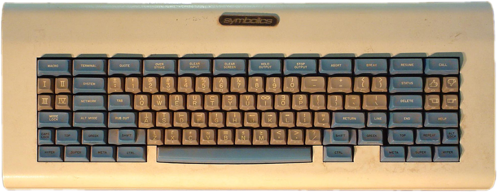
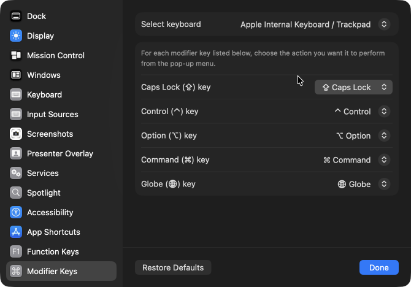
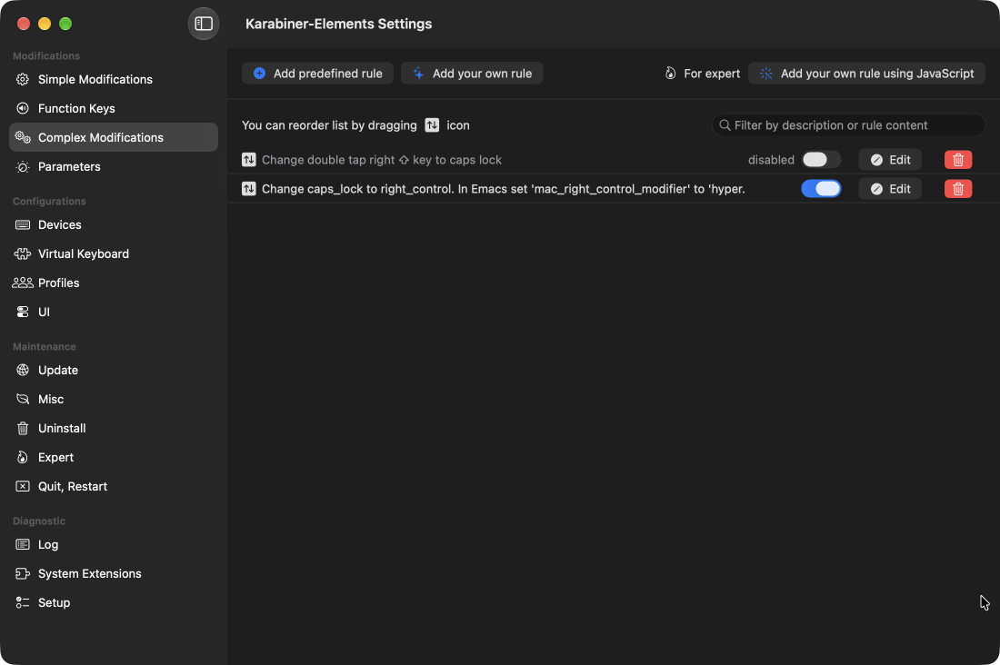

2026-05-26 23:18:02+01:00
I've been using Emacs since the early 90s when a co-worker showed it to me on his AIX workstation. This was around v18 I believe. Up until that point I had been using the original vi editor on Sun 3/60 boxes at my first job after graduation, so it took some time for me to get used to the Emacs-way of doing things with complex sequences of keys and various combinations of modifiers such as "control", "alt" or "meta". However, it stuck and even now I am typing out this short note on my Apple laptop using Emacs v31.1.
For most of my life I have been happy to use the stock modifiers, but then I saw a picture of the famous "space-cadet" keyboard with its super and hyper modifiers, and I wanted more.

The problem is that we cannot just add keys, especially on a laptop. But with some crafty tools we can repurpose one or more existing and rarely-used ones to serve the same purpose.
When editing code -- and honestly in general -- the caps lock key sees very, very little use. It is a vestige from the days of typewriters, same as the (supposedly1) inefficient QWERTY layout of the keys to reduce jamming of mechanical typewriters. Some have moved to more enlightened layouts, but that is a bridge too far for me. In an incredible feat of foresight, I took a typing class in the 7th or 8th grade and became a proficient touch typist.
I digress.
On macOS one can change caps lock using the "System Settings" → "Keyboard" → "Keyboard Shortcuts…" → "Modifier Keys" modal:

However, the only options available are to replicate another modifier key or to disable the key completely. None of those are sufficient for my purposes: I want to be able to distinguish the pressing of "caps lock".
One solution2 is to install Karabiner-Elements, "a powerful and stable keyboard customizer for macOS." True to its blurb, it is indeed powerful and with it I can do what I want, but thankfully it is also easy to use. Using the copious examples found on their community page, I created two Complex Modifications entries:

The first rule detects a double-tap of the right shift key to toggle the caps lock state of the keyboard so I have not completely lost the functionality (currently, this is disabled since I do sometimes trigger it by mistake, and I have yet run into a need for caps lock being on). See the various examples on the community page for the JSON code to do this.
The second rule remaps the caps lock key to emit the right_control modifier, which is a key that does not actually exist on my Apple M1 macBook Pro laptop, but macOS does recognize its existence in software, so it is seen by applications. Here is the definition of the second rule:
{
"manipulators": [
{
"description": "Change caps_lock to right_control. In Emacs set 'mac_right_control_modifier' to 'hyper.",
"from": {
"key_code": "caps_lock",
"modifiers": { "optional": ["any"] }
},
"to": [{ "key_code": "right_control" }],
"type": "basic"
}
]
}Most examples I found on the community page remapped the caps lock key to be a combination of multiple modifiers such as ⇪ ⌃ ⌥ ⌘ (shift control option command), but this is not what I want.
That is all. The keyboard is now ready for Hyper Emacs.
In general, Emacs supports five (5) modifiers:
controlmetaaltsuperhyperAt least on the Emacs build from d12frosted
via homebrew, a stock Emeacs
(emacs -Q) has modifier keys with the following
assignments:
S-) via left and right shift (⇪)C-) via left control (^)M-) via left and right option (⌥)s-) via left and right command (⌘)These were divined by using the Emacs describe-key
command (C-h) and then pressing the modifier key and
F7 to see what Emacs saw.
Note: I had no idea until I was testing that there was an existing mapping for
super. Super!
Out of the box, Emacs has really good
support for macOS. Emacs is able to detect the left and right
modifier keys, but by default they both map to the same Emacs modifier
symbol. However, one can easily reconfigure the assignments by adding
something like the following to the init.el startup file in
the ~/.emacs.d directory (create both if necessary):
(setopt ns-alternate-modifier 'alt ; Map alt to option and meta to command
ns-command-modifier 'meta ; Much easier to type M-x
ns-function-modifier super ; Make 'super available on left side
ns-right-alternate-modifier 'hyper
ns-right-command-modifier 'super
ns-right-control-modifier 'hyper) ; The caps lock mapping from KarabinerWith that in place, Emacs now sees the following modifiers:
S-) via left and right shift (⇪) (no
change)C-) via left control (^) (no change)A-) via left option (⌥)M-) via left command (⌘)H-) via caps locks-) via right command (⌘)H-) via right option (⌥)Stock Emacs puts a lot of key bindings under the C-x
keymap. Normally, C-c is reserved for user bindings, but it
is slowly being encroached on -- in the output from C-h b
typed in this Markdown buffer, I
find C-c bindings from the winner minor mode,
and the markdown-ts-mode major mode. But with the
availability of alt, hyper and
super modifiers, we can easily reorganize things for better
recall. For instance, I have custom bindings that bring up the
init.el file (H-c i) and my
custom.el file that holds customized settings
(H-c ,). For project bindings, Emacs has the default
C-x p but that C-x is too harsh to repeatedly
type, so I have a dedicated H-p to get me there much
faster. Same for C-x 4 and C-x 5 -- much
easier to just type H-4 or H-5 to control
where a new window will go (H-4 for the other
window, and H-5 for a new frame). Finally, I use Magit for
managing git repos, so H-g is something I frequently type
instead of the much longer C-x p v.
For now, I have three keymaps that all start with a hyper character:
H-c -- for many of my most common functionsH-n -- dedicated to Denote note actionsH-s -- newest set for Symbol Overlay
functions which I am leaning on more and moreI have yet to do anything with the super modifier.
Although I do not run Emacs much in a terminal window, I have found
myself in situations where that was the only option, and I was always
bummed to find missing or unsupported key mappings when in Emacs running
in a terminal window. For the longest time, I suffered through it, but
then I came across the nifty Key Chord package
that recognizes two-characters typed simultaneously (or one character
quickly repeated), and these key chords can be bound to functions and
even key maps. So, I defined "hh" to map to a custom hyper keymap, so
that typing "hh" quickly followed by a letter such as "c" would be
treated as the H-c key sequence, just as if the hyper key
was used along with a "c".
However, I am now using the Kitty Keyboard Protocol package which greatly improves the modifier reporting between supported terminal programs such as iTerm2. Now, I have the same modifier availability in Emacs when it is run in iTerm2 as I have when Emacs is running as a native macOS application. Very, very cool.